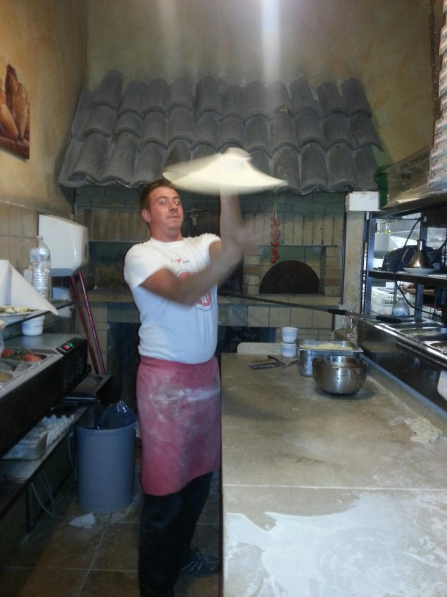
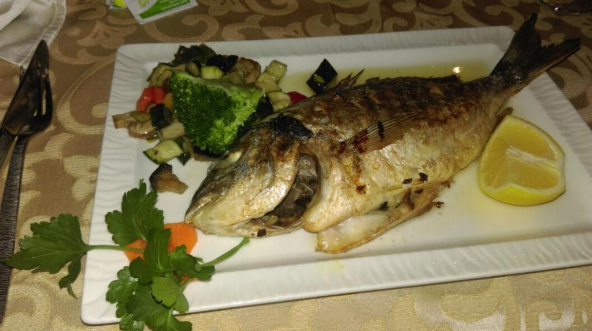
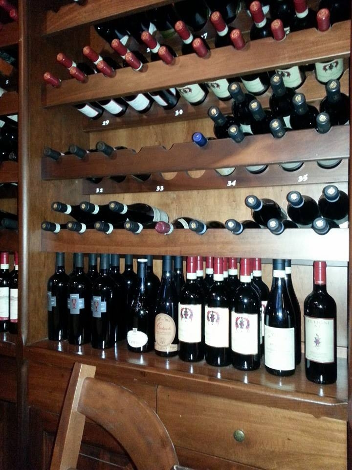
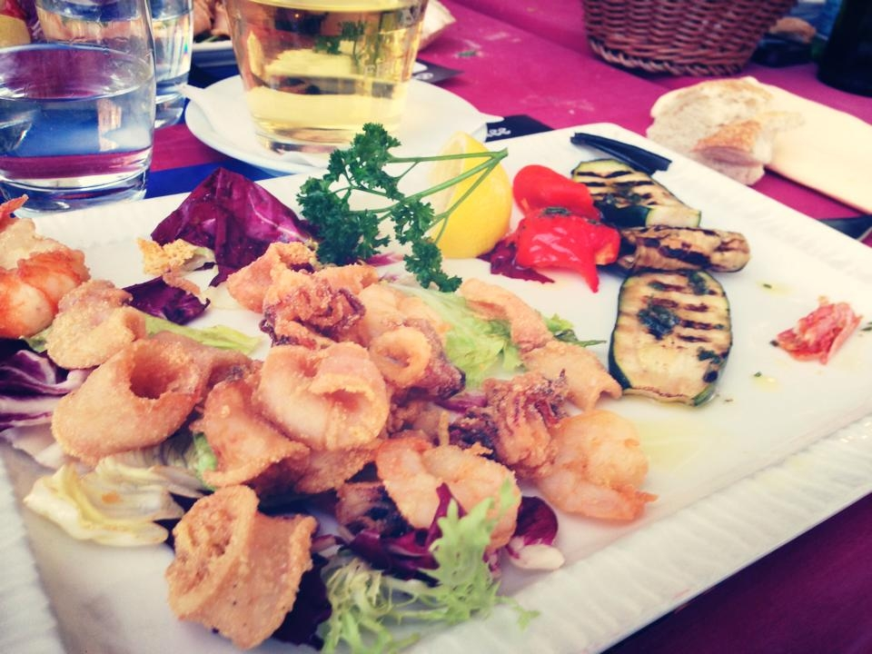
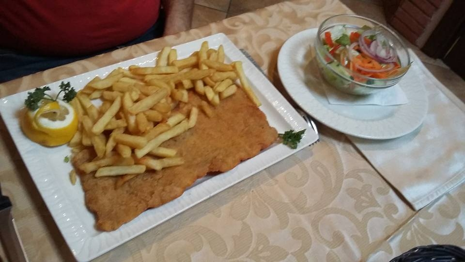
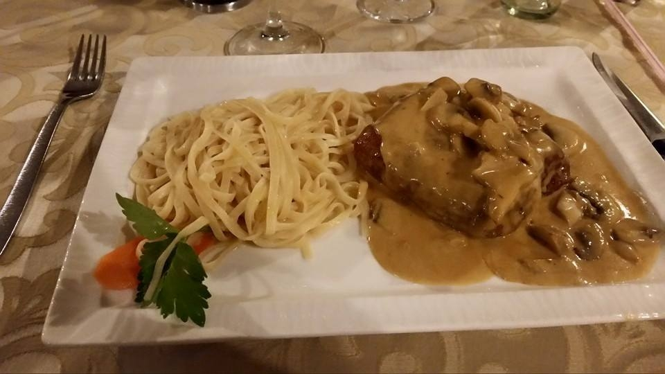
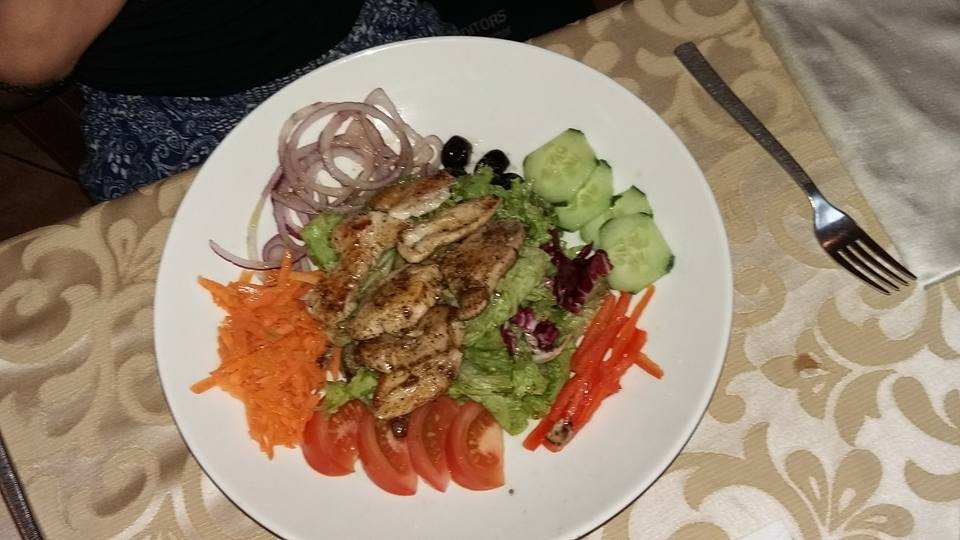

Antica
Trattoriatrattoria & pizzeria · four à bois

La braise, dès l'entrée
Le four brûle à vue, près de la porte.


Ouvert 7j/7
Déjeuner 11h45 – 14h00 · Dîner 18h30 – 22h00
Horaires à confirmer avec l'établissement.


En famille & en terrasse
Salle de jeux pour les enfants, terrasse aux beaux jours, Ticket Restaurant accepté.

La Carta
Un aperçu de la carte. Plats et prix indicatifs — à confirmer avec l'établissement.
Carte non exhaustive. Prix en euros, TVA comprise. Tous les plats, prix et disponibilités sont à confirmer avec l'établissement.
Le four à bois, le cœur battant de la trattoria.
À l'Antica Trattoria, tout commence par la braise. Le four brûle à vue, près de l'entrée, et le pizzaïolo lance la pâte à la main à chaque service — un geste, une odeur, l'Italie du Nord au carrefour de Belair.
Pâtes fraîches faites maison, poissons entiers au gril, antipasti généreux et une belle cave de vins italiens : une cuisine sincère, sans chichi, à prix raisonnable — pensée pour le quartier, les familles et les habitués.

Réserver & nous joindre
166, Avenue du Dix Septembre
L-2550 Luxembourg — Belair
antica@pt.lu (à confirmer)
Réservation par téléphone conseillée. Emporter & livraison disponibles.
Horaires
Horaires à confirmer avec l'établissement.